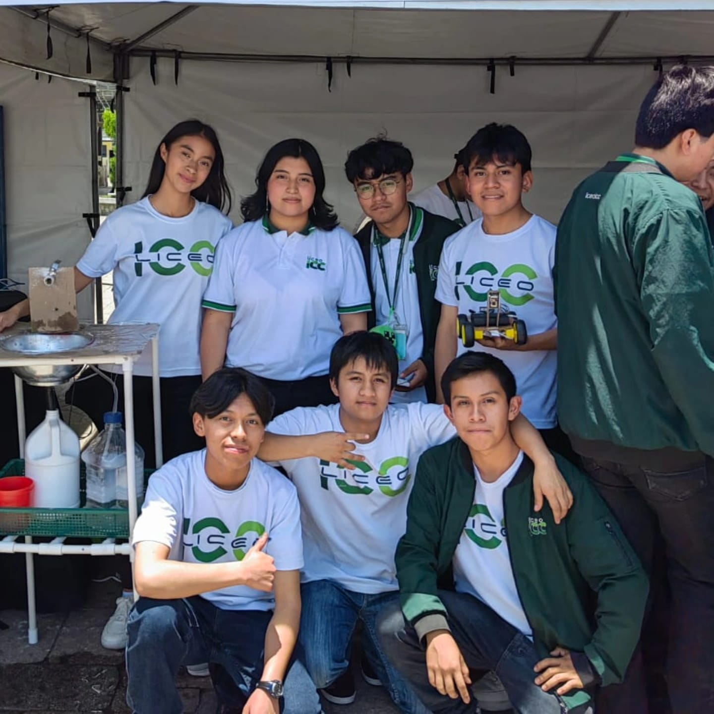

Una pequeña pausa antes de graduarnos, pero sin antes poder darles este regalito de parte de mi
Hay personas que
se vuelven parte
de nuestra historia. Como lo fueron ustedes para mi, Brayan, Kevin, Jorge, Mishel y Yadira
Tres años viéndonos practicamente todos los dias entre tareas, bromas, estrés y chingaderas y un montón de momentos que ahora valen oro. Me cuesta pensar que ya no será así, pero me alegra haber vivido esta etapa con ustedes. Esto es un hasta pronto.
Descubre tu mensajeHecho con cariño, para cada persona que hizo special este camino.
Los que significaron,
se quedaran para siempre.” con cariño, siempre
El último día
de una rutina.
No de un vínculo.
Me pone feliz tener ese momento con ustedes, aunque no voy a negar que da un poco de pena saber que ya no nos veremos todos los días.
En el camino también hubo dos compañeros que dejaron de estar con nosotros. Se sintió su ausencia, pero seguimos adelante, nos apoyamos y llegamos hasta aquí. Eso también forma parte de nuestra historia y de todo el esfuerzo que hicimos para cumplir nuestra meta.
Quise dejarles estas palabras porque gracias a ustedes estos tres años fueron mucho más que venir a clases. Me llevo un recuerdo de cada uno. Estos recuerdos serán los que más apreciaré. Sin olvidar que esto lo estaran leyendo cuando ya no este con ustedes o en ese mismo momento.”
Momentos que
enserio merecen quedarse.

Para mis estimados compañeros
Gracias por hacer
de estos tres años
algo inolvidable.
Gracias por seguir adelante conmigo y por hacer que estos tres años valieran tanto. Nos vemos en la graduación. Los voy a extrañar.
Con mucho cariño les dice ANDY el mas crack🗣️ ♥